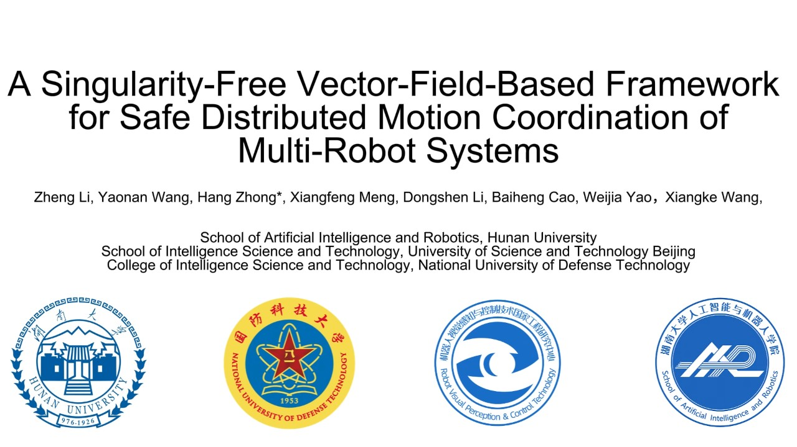

01Research direction
Fixed-wing UAV Systems
Motion planning, guidance and control for autonomous fixed-wing aerial vehicles.
Hi! I am Zheng Li (李政), a PhD student at the School of Artificial Intelligence and Robotics, Hunan University, Changsha, China. I received my Bachelor of Engineering in Robotics and Intelligence Devices from the Maynooth International Engineering College at Fuzhou University in 2024.
My interests span fixed-wing UAV systems, guiding vector fields, diffusion-based robot planning, and nonlinear system modeling and control.
My research includes vector-field-based motion coordination for multi-robot systems. My selected publication is listed below, together with its supplementary demonstration video.
I study planning and control methods for autonomous robotic systems, with a focus on reliable motion in complex environments.
Motion planning, guidance and control for autonomous fixed-wing aerial vehicles.
Guiding vector fields and safe distributed motion coordination for multi-robot systems.
Learning-based path planning and intelligent navigation in complex environments.
Modeling, stability analysis and control of complex dynamic systems.

IEEE Transactions on Robotics
A research focus on vector-field-based guidance and safe distributed motion coordination for multi-robot systems.
Motion planning, guidance and control for autonomous fixed-wing UAV systems.
Exploring diffusion-based robot path planning alongside nonlinear system modeling and control.
For research discussions, collaboration and professional opportunities.